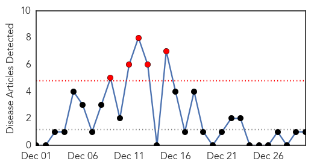
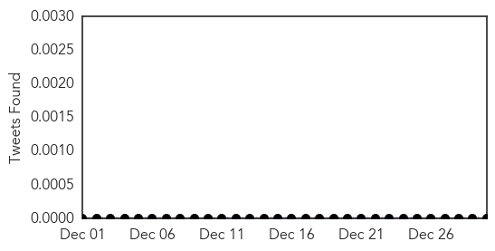
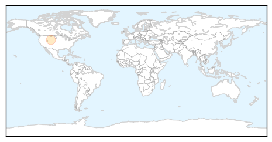
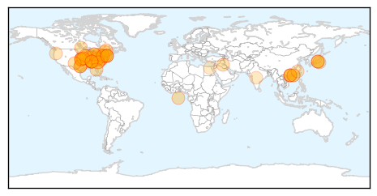
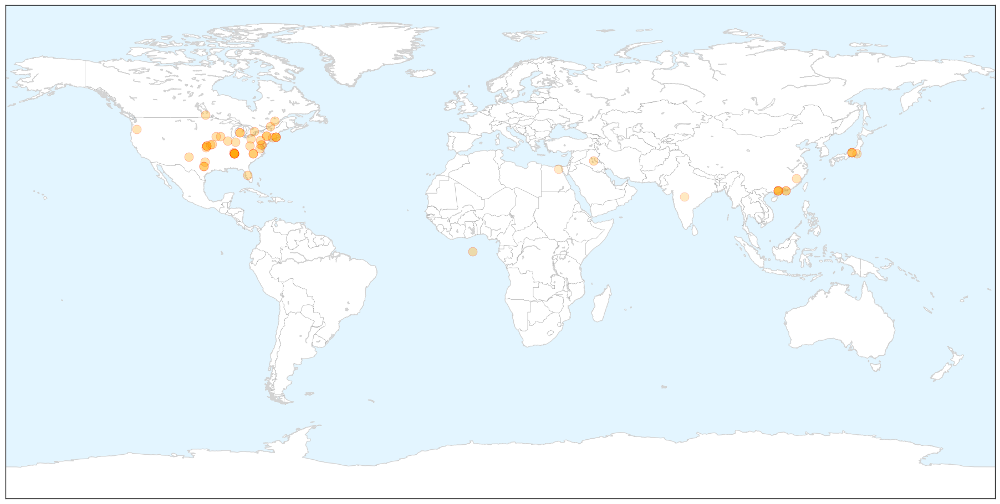

Pertussis
30-Day Web Trend
5 alerts, 0 warnings

30-Day Twitter Trend
0 alerts, 0 warnings

Article Locations
Article Confidences

Top Articles:
Top Tweets:
-
No tweets found for Dec 30, 2014
Influenza
30-Day Web Trend
2 alerts, 0 warnings

30-Day Twitter Trend
7 alerts, 0 warnings

Article Locations

X

Article Confidences

Top Articles:
- 1.000
- CDC Officially Declares Flu as Epidemic
- 0.999
- With 15 Children Dead, CDC Warns Of Flu Epidemic
- 0.999
- Flu widespread in TN and GA - WRCBtv.com
- 0.999
- Flu restrictions grow as NC deaths rise
- 0.999
- B.C. flu, RSV outbreaks spell trouble for elderly, infants
- 0.999
- KU hospital sees increase in flu cases as 2nd patient dies
- 0.999
- Flu season hitting Upstate hard
- 0.999
- Ers flooded with flu cases: Anne Arundel Medical Center asks low-risk people with flu to avoid ER visits
- 0.999
- Health commish: ‘If you’re sick, stay home’ on New Year’s Eve
- 0.999
- Cone Health restricts visitors due to flu
- 0.999
- Influenza on the rise in Kansas
- 0.998
- Flu is breaking records in Central Florida this season
- 0.998
- Flu cases: CDC says US at epidemic threshold
- 0.998
- Flu epidemic spreads across Kansas City metro
- 0.998
- Flu reaches epidemic levels in Illinois, across nation
- 0.997
- Preventive measures urged as flu reaches epidemic levels
- 0.997
- Health officials recommend flu shot
- 0.996
- CDC: Flu Reaching Epidemic Levels
- 0.996
- Flu shot no match for H3N2 strain reported across Canada
- 0.996
- Washington's flu season hits early and hard
- 0.995
- Flu cases spiking in Pennsylvania
- 0.995
- VIDEO: Flu is now epidemic, but it's not too late to get vaccinated
- 0.994
- Flu vaccine might fall short, health officials warn
- 0.993
- CDC declares this year's flu an epidemic
- 0.993
- With 15 Children Dead, CDC Declares Flu Epidemic
- 0.993
- WV MetroNews – Flu widespread in West Virginia; health officials expect rough season
- 0.992
- Fifteen children die in U.S. flu epidemic
- 0.990
- Flu epidemic hits East Texas - KLTV.com-Tyler, Longview, Jacksonville, Texas
- 0.988
- Flu cases on the rise - WRCBtv.com
- 0.988
- Flu activity now widespread in Tenn., 35 other states
- 0.988
- Flu hits Kalamazoo adults, kids -- even doctors and nurses -- hard
- 0.988
- Flu Slams U.S., CDC Calls Dec. Levels 'Epidemic'
- 0.987
- Health dept. declares flu widespread in RI
- 0.985
- Flu season hitting fast, hard
- 0.984
- 3 children died from flu complications in last month - WRCBtv.com
- 0.984
- Iowa flu hospitalizations one sign numbers are spiking
- 0.984
- NEWS: Flu is declared widespread in RI, triggering precautions
- 0.980
- Kansas City health officials say flu season 'unprecedented'
- 0.977
- Va. flu cases double from last year; spike over past few weeks
- 0.965
- Avian Flu Scan for Dec 30, 2014
- 0.965
- Anthem, Inc. Encourages Seniors to Get Annual Flu Shot
- 0.964
- KUNA : Japanese PM orders prompt preventive measures after third bird flu outbreak
- 0.960
- Influenza reaches “widespread” levels
- 0.956
- ‘Harsh’ flu season lands many in hospital
- 0.938
- Hong Kong culls 19,000 birds amid avian flu alert
- 0.934
- Ashburn fifth grader dies, flu the possible cause
- 0.932
- Visitation restrictions expand to other Valley hospitals
- 0.930
- NEWS: DOH declares flu widespread in RI
- 0.904
- University of Kansas Hospital confirms second flu death; Doctors to meet to discuss spike in cases
- 0.891
- Bird flu outbreak : Japan orders slaughter of 37,000 chickens
Showing top 50 articles...
Top Tweets:
-
No tweets found for Dec 30, 2014